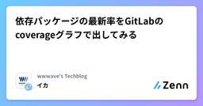
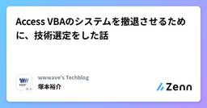

wwwave's Techblogのフィード
https://zenn.dev/p/wwwave
株式会社ウェイブのエンジニアによるテックブログです。 弊社では、電子コミック、アニメ配信などのエンタメコンテンツを自社開発で運営しております！ https://wwwave.jp/service/
フィード

依存パッケージの最新率をGitLabのcoverageグラフで出してみる
wwwave's Techblogのフィード
依存パッケージの更新、追いついてる？パッケージの更新は、少し面倒ですよね。実際動いてるし。だから少し遅れ気味になることもあるかもしれません。でも、依存パッケージの最新化を怠っていると、バグの修正が今のバージョンには来ておらず major アップデートを挟まないといけなかったり、何かと意図せず突然作業が増えたりします。なので今回は、その「今」を可視化するため、最新率を適宜計測して GitLab のカバレッジグラフに出します。 今回やること現在の npm 直接依存について、dependencies と devDependencies それぞれのパッケージ最新率を算出する値...
1日前

Access VBAのシステムを撤退させるために、技術選定をした話
wwwave's Techblogのフィード
はじめにこんにちは、塚本です。私が担当している業務で提供しているツールには、Access VBA で書かれた「納品業務システム」が長年稼働しています。電子コミックを複数の配信先へ納品する業務を支えているシステムです。このシステムをめぐって、今回考え・決めたことは大きく3つです。Access VBAはもう限界だ、ということ進め方をどうするか（結論：スキーマの再設計ではなく、まずテストを完備しよう）テストを完備でき、かつAccess VBAの代替になる技術は何か本記事では、この3点をどう考えて結論に至ったかを時系列でまとめます。「レガシーな社内ツールをどう置き換えるか」...
2日前

マスタデータ更新フロー刷新PJの進め方を振り返る
wwwave's Techblogのフィード
参画しているプロダクトのマスタデータの更新フローを刷新しました今までで自分が担当した最も規模の大きいタスクだったので、プロジェクトについて振り返りますマスタデータ更新に関する技術的な内容は自社のドメイン領域になるため、具体的なことは記載していないです本記事はプロジェクトを進めていく中での自分の反省や所感を綴った記事になります プロジェクトの概要 既存のマスタデータ更新フローの流れ超ざっくりとした更新フローです 既存システムの課題既存システムの正確な仕様書が存在しない全体の仕様を把握している人も存在しない運用チームが並行で作業できない更新フローを1度行うのに...
3日前
仕様書更新を自動化してみる
wwwave's Techblogのフィード
はじめにみなさんは仕様書の管理をどうしていますか？毎回人力であの仕様が変わったから、仕様書の該当箇所を都度修正したり、そもそも仕様書なんてコードを読めば良いと仕様書の更新をまったく行わずにいたりしないでしょうかエンジニアであればコードを読めば仕様がわかるかもしれませんが、エンジニア以外も仕様を確認する場合もあります。ただ、毎回コードをみるコストもかかってしまいます。 背景私たちのチームでも同じように仕様を確認するコストが発生していました。具体的に言うと、以下の際に仕様書が古いため問い合わせがくる場合がありました。エンジニアに問い合わせが来て、都度確認していました。...
5日前
ClaudeのSkillを使って障害調査を自動化する
wwwave's Techblogのフィード
しんどい障害調査をなくしたい障害調査には慣れと知識が必要です。どこを見るか、どの順番で見るか、そこから何を読み取るか。経験のある人ほど早く原因に近づけるし、経験がなければ手が止まります。だから新人にとって、障害対応は「できればやりたくない仕事」になりがちです。早く原因を突き止めなければならない焦燥感の中で、それでも原因が分からない。あの時間のつらさは、慣れていてもきついものです。そこで障害調査をClaudeのスキルとして整備しました。※ゼロから作ったものではなく、DAグループ[1]が作成したベースのスキルをもとに、自分たちの環境に合わせてデータソースの追加、サブエージェント化...
7日前

バッチ監視の「沈黙」を設計する
wwwave's Techblogのフィード
ダッシュボードでのバッチチェックをやめたい毎日、BIツールのダッシュボードでバッチ結果を目視していました。そこまで大変な作業ではないのですが、毎日続くと負担になることや、失敗の検知が目視のタイミングに依存してしまい検知が遅れてしまうなどの問題がありました。そこで今回、バッチ監視を異常があったときだけ通知が届く形にしました。ただ受動的な監視に変えると、「通知が来ない」が既定の状態になります。その「通知が来ない状態（沈黙）」は正常なのか、何かを見落としているのか。区別が付きません。この記事は、その沈黙をどう解釈するかを設計した話になります！ 検知したいバッチの3つの状態...
13日前
Codexでチェスコーチツールを作ってみた
wwwave's Techblogのフィード
はじめにこんにちは、AI大好きマンです！突然ですが、みんなさんはチェスが好きです？日本では、将棋や囲碁ほどの知名度がないが、近年はDuolingoやNetflixドラマのThe Queen's Gambitにおかげで、チェスプレイヤが少しずつ増えています。ですが、チェスは奥深いのため、初心者から上級者までみんなよく挫折していますよね。少しでも挫折しないように、チェス対局を振り返るためのコーチツールを作ってみました！ StockfishとはチェスAIに対して批判的な意見も大変ありますが、チェスを上達するためにチェスAIはもはや不可欠なツールになっている現実ですね。その中...
15日前
「preloadしたのに毎回SQLが飛ぶ」を解剖する — RailsのN+1問題の原因・解決策・効果測定
wwwave's Techblogのフィード
はじめにこんにちは、塚本です。皆さん、「処理の結果は、期待通りだけどなんか処理が遅い・重いな」こんな風に思ったことはありませんか？実際に私もそういった処理に遭遇し、原因を調査・修正したことがあります。その原因は典型的なN+1問題だったのですが、興味深かったのは 「includes/preload を追加したのに、期待したほど速くならなかった」 という点でした。この記事では、その原因と解決策、そして改修の効果をどう定量的に確認したかを、汎用化したサンプルコードで解説します。※環境は、「Ruby on Rails + PostgreSQL 」です。 この記事の構成N+1問...
1ヶ月前
『自分の小さな「箱」から脱出する方法』を読み、コミュニケーションの「あり方」と向き合った話
wwwave's Techblogのフィード
はじめにこんにちは、塚本です。これまで『カイゼン・ジャーニー』などの書籍から学びを得て、チーム内でのカンバン運用やリーダーズインテグレーションといったワークショップを実践し、チーム開発のプロセス改善に力を入れてきました。そうした仕組みづくりやワークショップの重要性を実感する一方で、最近強く感じるようになったのが「仕組みの根底にある『人の心』や『心理学的な観点』から仕事に役立てるアプローチ」の必要性です。開発組織として技術を磨くのは当然ですが、チームの“空気”や“信頼”のような目に見えないものをどう向き合うかが、今後ますます重要になると感じています。今回は、チーム内はもちろん...
1ヶ月前
AIが壁打ち相手になってくれる日報・内省アプリを、GAS×Geminiで作った話
wwwave's Techblogのフィード
はじめにこんにちは、塚本です。以前、『カイゼン・ジャーニー』を読んだ話をZennに投稿しました。こちらの記事では「チームでカイゼンを回す」ことの大切さに触れましたが、実際に自分のチームでもカンバンを導入し、少しずつ「個人で完結させず、チームで開発を進める」意識を浸透させようとしている最中です。ただ、カンバンをチームに導入してみて感じたのは、チームのふりかえり（レトロスペクティブ）がうまく機能するかどうかは、結局そこに集まる一人ひとりが「自分自身を客観的にふりかえる力」を持っているかに左右される、ということでした。チームの場でいきなり本音の課題や気づきを言語化するのは、意外とハー...
1ヶ月前
Railsアプリでまずやるパフォーマンス改善
wwwave's Techblogのフィード
はじめに運用中のWebサービスの一部のページでレイテンシの上昇が気になったので調べてみると、今まで見ないふりをしていたものも含めてUXにインパクトがありそうなエンドポイントがいくつかあったので改善することにしました。 概要AIを活用してRailsアプリのパフォーマンス改善をしたら、楽だったし効果もあった。 環境Rails + PostgreSQL + RedisClaude Code 進め方Datadogの公式MCPサーバーを利用する設定をして、ClaudeにAPMのURLを渡してパフォーマンス改善の指示を出すと、ほとんど全部やってくれました。解説も頼んだ...
1ヶ月前
Zapierを使ってフォームからJiraへ起票できるようにした話
wwwave's Techblogのフィード
はじめにこんにちは、塚本です。私たちのチームでは、以前こちらの記事『カイゼン・ジャーニー』を読んだ話で紹介した通り、タスク管理の透明性を高めるためにJiraのカンバンボードを導入しました。カンバンの導入によってチーム内のタスクは見える化されたのですが、他部署や社内メンバーからの依頼をどうカンバンに集約するかという問題にぶつかりました。そこで、開発コストを一切かけず、かつJiraのライセンス費用を節約しながらフォームの依頼をカンバンに一元管理する仕組みを構築しようと考えました。前回のカンバン導入に続きのステップとして今回お話しするのは、ノーコードiPaaSの Zapier:ザ...
2ヶ月前
【ラストマンシップ】自分が最後の砦であり、すべての責任を負う
wwwave's Techblogのフィード
はじめにみなさんは「ラストマンシップ」という言葉を聞いたことはありますでしょうか？以前、3ヶ月規模のプロジェクトを無事に完遂した際、いつもと違う強い「成長実感」がありました。今回は何か違う動きをしたか振り返った際、「自分がこのプロジェクトを最速で終わらせる」という強い気持ちがあり、普段なら絶対にやらないような行動をしていたことに気が付きました。これこそがまさに「ラストマンシップ」です。つまり、「自分が最後の砦であり、すべての責任を負う」というマインドセットのことです。 行動変化ラストマンシップを持つと、日々の行動が劇的に変わります。例えば、外部サービスを利用した...
2ヶ月前
『カイゼン・ジャーニー』を読んだ話
wwwave's Techblogのフィード
はじめにこんにちは、塚本です。最近、私たちのグループでは「RSpecによる自動テストの導入」などを進め、コードの内部品質（開発の安心感）を少しずつ上げていく取り組みを行っています。一方で、私たちのグループにはもう一つ、長年抱え続けてきた致命的な課題がありました。それが、業務が完全に個人に集中しており、チームでの開発（仕事）があまりできていないことです。個人のスキルや担当領域に依存し、お互いの領域がブラックボックスになった結果として、長年「トラック係数1（その人が倒れたらプロジェクトが止まる数値）」の業務が存在するという深刻な状態を引き起こしていました。コードを安全に保つ仕組み...
2ヶ月前
マクロキー作成にチャレンジしました ^ↀᴥↀ^
wwwave's Techblogのフィード
初めてのIOTデバイス作成へのチャレンジとして、マクロキー作成をしました。社内の技術遊戯部(テクノロジーで遊ぼうという部活)の活動の一環で実施しました。(部活動制度タスカリマス！)活動の雰囲気の様子は、【IOT初挑戦!】 マクロキー作ってみた =^ovo^=｜wwwave for engineer | ウェイブ エンジニア ブログ にまとめています。この記事では、技術的な部分をまとめます。IOT初心者のため、誤っている記述がありましたら、ご指摘いただけると助かります。今回は初めてのIOTデバイス作成ということで、1キーのみのマクロキーを作成することにしました。 材料まずは...
2ヶ月前
Railsの設計パターンと責務分離18選｜AI時代に見直すFat Controller / Fat Model対策
wwwave's Techblogのフィード
はじめにRailsで開発していると、Service Object、Serializer、Finder Object、Value Object などの言葉を見かけることがあります。どれもざっくり言うと、ControllerやModelに処理を詰め込みすぎないための切り出し先です。いわゆる Fat Controller / Fat Model を避けるための考え方ですね。AIに実装を任せられる場面が増えた今だからこそ、ただ動くだけではなく、どこに何の責務を置くかを考える力もより大事になっていると感じます。!設計の観点をプロンプトやSkillsに組み込むことで、AIが生成する...
2ヶ月前
Claude CodeのAgents Viewを使ってみた
wwwave's Techblogのフィード
Claude Code Agent Viewとはworktree使ってないときは、claude -rのみで昔のセッションどれだっけーと管理してました。別のディレクトリにcdで移動して、とかもいちいちやってましたそれが全部解決！https://code.claude.com/docs/ja/agent-view複数のエージェントをエージェントビューで管理する！ 主な使い方claude agentsで呼べますclaude agents開くとこんな感じ セッションについて管理画面で指示を入力したらセッションが追加されます。名前は勝手に付けられます。作業している...
2ヶ月前
公開されているskillを使ってClaudeのハーネスを設定してみる
wwwave's Techblogのフィード
はじめに公開されているスキルを組み合わせればハーネスができるのでは？と思ってまとめてみました。本記事で扱う「公開されているスキル」は次の3つを対象としています。Claude Codeに組み込まれているもの (/initなどデフォルトで使える)公式プラグインに登録されているもの (anthropics/claude-plugins-official配下)著名なサードパーティ製のもの (Anthropic外の開発者が公開しているプラグイン) 前提Claude Code CLI ハーネスとは何かハーネスはこの記事で説明されている考え方を参考にしています...
3ヶ月前
テスト駆動開発（TDD）をやってみた
wwwave's Techblogのフィード
はじめに初めてTDDを聞いた時は「テストから書き始めて手戻りを減らす手法」程度に思ってしまっていました。そのような認識でいた時にAIエージェントが流行り、「TDDで実装させた方が品質が良くなる」ことをTwitterで見ました。自分の認識していたTDDから「TDDがAIが開発するときになぜ良い影響がもたらすのか」という疑問がずっと存在していて、ようやくTDDについて調べ、実践してみました。 やってみたTDDのお題rubyで探したら以下のサイトを発見したのでお題にしました。エンジニアのスキルを伸ばす“テスト駆動開発”を学んでみよう | 初学者のためのTDD（テスト駆動開発）...
3ヶ月前
HTMLをGASを使って社内でサッと共有したい
wwwave's Techblogのフィード
発端次のポストを見たのがきっかけでした。AIでHTMLを作ることが増えてきたのですが、できあがった HTML を社内で気軽に見せる場所がありませんでした。社内は Google Workspace を使っているので、Google Apps Script（GAS）と Google Drive だけで作れるのでは？と思って作ってみました。 作ったものDrive のフォルダに置いた HTML を、URL ひとつで社内共有できるウェブアプリです。トップを開くと管理画面が出ます。ここに .html ファイルをドラッグ＆ドロップするだけでアップロードできます。管理画面（オーナー...
3ヶ月前